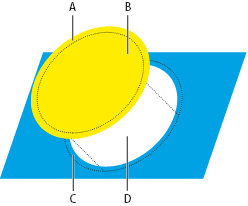
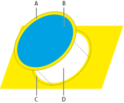

Create a spread or choke
For more precise control of trapping and for trapping complex objects, you can create the effect of a trap by stroking an object and setting the stroke to overprint.
- Select the topmost object of the two objects that must trap into each other.
- In the Stroke box in the Tools panel or the Color panel,
do one of the following:
-
Create a spread by entering the same color values for the Stroke as appear in the Fill box. You can change the stroke’s color values by selecting the stroke and then adjusting its color values in the Color panel. This method enlarges the object by stroking its boundaries with the same color as the object’s fill.

Object stroked with fill color
- A.
- Overprinted stroke creates spread trap
- B.
- Fill creates knockout
- C.
- Area of trap
- D.
- Area of knockout
-
Create a choke by entering the same color values for the Stroke as appear in the lighter background (again, using the Color panel); the Stroke and Fill values will differ. This method reduces the darker object by stroking its boundaries with the lighter background color.
-
- Choose Window > Stroke.

Object stroked with background color
- A.
- Overprinted stroke creates choke trap
- B.
- Fill creates knockout
- C.
- Area of trap
- D.
- Area of knockout
- In the Weight text box, enter a stroke width of between
0.01 and 1000 points. Check with your print shop to determine what
value to use.
For example, a stroke weight of 0.6 point creates a trap of 0.3 point. A stroke weight of 2.0 points creates a trap of 1.0 point.
- Choose Window > Attributes.
- Select Overprint Stroke.